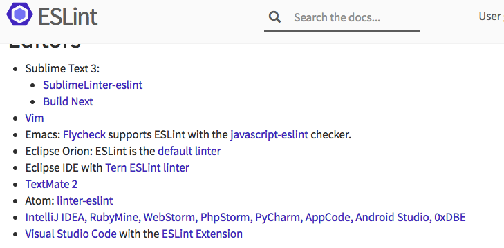

Linting MFAO

What's a Linter?

Software that checks and cleans your code
-
Syntactic Errors
- Missing Braces/Parens
- Undefined Variables/Functions
-
Formatting/Preferences
- Spacing
- Semis
- Vars on Top
-
Stylistic Preferences
- Object shorthand
- Template literals
- Yoda Conditionals

There's More
Linters do so much more
They improve your code!
-
Remove Debugging Code
- Console, Debugger statements
-
Find Dead Code
- Unused vars, Unreachable code
- Fix Runtime Errors
meh, I don't need it

// one-equals-two.js
let one = 1;
if (one = 2) {
console.log('This should never print!');
} else {
console.log('Phew, the world makes sense');
// You know you're writing javascript, right?
}
[.../LintingMFAO/examples]$ node one-equals-two.js
This should never print!

// printOne.js
// Example from ESLint.org
console.log('printOne:', printOne());
function printOne() {
try {
return 1;
} catch (err) {
return 2;
} finally {
return 3;
}
}
[.../LintingMFAO/examples]$ node printOne.js
printOne: 3

And the list goes on
- eqeqeq
- no-script-url
- new-cap
Styling is just the beginning
- js is not compiled!
- Collections of best practices
- No one knows it all, use the community
Linter History

{kind=link}
- jslint
- jshint
- jscs
- eslint
ESLint Setup

ESLint site is Awesome!
Installation
npm install -g eslint
npm init
npm install eslint --save-dev
Initialization
eslint --init
-or-
./node_modules/.bin/eslint --init
[~/code/personal/talks/LintingMFAO/examples]$ ./node_modules/.bin/eslint --init *[master]
? How would you like to configure ESLint? Answer questions about your style
? Are you using ECMAScript 6 features? Yes
? Are you using ES6 modules? Yes
? Where will your code run? Browser
? Do you use CommonJS? No
? Do you use JSX? No
? What style of indentation do you use? Spaces
? What quotes do you use for strings? Single
? What line endings do you use? Unix
? Do you require semicolons? Yes
? What format do you want your config file to be in? (Use arrow keys)
❯ JavaScript
YAML
JSON
Config File Formats
- .eslintrc.js
- .eslintrc.yaml
- .eslintrc.yml
- .eslintrc.json
- .eslintrc (Deprecated)
- package.json
module.exports = {
"env": {
"browser": true,
"es6": true
},
"extends": "eslint:recommended",
"parserOptions": {
"sourceType": "module"
},
"rules": {
"indent": [
"error",
4
],
"linebreak-style": [
"error",
"unix"
],
"quotes": [
"error",
"single"
],
"semi": [
"error",
"always"
]
}
};
Running ESLint
// welcome-to-eslint.js
var foo = bar;
[.../LintingMFAO/examples]$ eslint welcome-to-eslint.js
.../LintingMFAO/examples/welcome-to-eslint.js
1:5 error 'foo' is assigned a value but never used no-unused-vars
1:11 error 'bar' is not defined no-undef
✖ 2 problems (2 errors, 0 warnings)
Configuring ESLint

Config Hierarchy
- Inline (In-Code) Config
- Command Line Options
- Config Files
- Parent Directories Config
- Opt out
root: true
- Opt out
- ~/.eslintrc.js
- (If no other config is found)
Hierarchy makes it simple to support
- Isomorphic Javascript Projects
- Different styles within a repo
Project Flexbility
- your-app/
- .eslintrc.js (Base Setup/Plugins)
- app/
- .eslintrc.js (Browser env/Strict rules)
- server/
- .eslintrc.js (node env/CommonJS)
- tests/
- .eslintrc.js (lenient/globals)
ESLint Rules

Code is linted by a set of configurable rules
module.exports = {
// ...
"rules": {
"indent": [ // Rule Name
"error", // Warning Type: off (0), warn (1), error (2)
4 // Options
],
"new-cap": ["error", { // Object Options
"capIsNew": false
}],
"quotes": ["error",
"single ", { // Multiple Option Params
"allowTemplateLiterals": true
}],
}
};
- Rules are well documented (eslint.org)
-
All rules are similarly configured
(I'm looking at you jshint!)
Rules are defined
- ESLint core
- In-repo custom rules
- Plugins (npm packages)
Plugins?
Tell me more
module.exports = {
// env, etc
extends: [
'eslint:recommended',
'plugin:ember-suave/recommended'
],
rules: {
// project-specific settings
// plugin-overrides!
}
};
ESLint in Ember

-
broccoli-lint-eslint
- Add eslint support to broccoli build
-
ember-cli-eslint
- Sets up your app (blueprints)
- Integrates with test infrastructure
-
eslint-plugin-ember-suave
- Adds the suave
eslint-plugin-ember-suave

eslint-plugin-ember-suave
- Ember-specific, community styling by Dockyard
- Custom Rules
- Great ESLint rule base
- You'll have to tweak a few things
Installation
# Install suave ESLint plugin
npm install --save-dev eslint-plugin-ember-suave
# Install ESLint for Ember
ember install ember-cli-eslint
Linting Hat Trick

Same linting results
- Command Line
- Editor
- Build (test and pre-push)
Command Line Linting (Manual)
[~/code/personal/talks/LintingMFAO/examples]$ eslint index.js *[master]
/Users/jray/code/personal/talks/LintingMFAO/examples/index.js
1:5 error 'foo' is assigned a value but never used no-unused-vars
1:11 error 'bar' is not defined no-undef
✖ 2 problems (2 errors, 0 warnings)
Command Line Linting (npm-scripts)
{
"name": "lmfao-examples",
// ...
"main": "index.js",
"scripts": {
"pretest": "npm run lint",
"test": "echo \"Error: no test specified\" && exit 1",
"lint": "eslint *.js",
"lint-pretty": "eslint --format table *.js"
},
// ...
}
Command Line Linting (npm-scripts)
[~/code/personal/talks/LintingMFAO/examples]$ npm run lint-pretty *[master]
> lmfao-examples@0.0.1 lint-pretty /Users/jray/code/personal/talks/LintingMFAO/examples
> eslint --format table *.js
/Users/jray/code/personal/talks/LintingMFAO/examples/index.js
║ Line │ Column │ Type │ Message │ Rule ID ║
╟──────────┼──────────┼──────────┼────────────────────────────────────────────────────────┼──────────────────────╢
║ 1 │ 5 │ error │ 'foo' is assigned a value but never used. │ no-unused-vars ║
║ 1 │ 11 │ error │ 'bar' is not defined. │ no-undef ║
╔════════════════════════════════════════════════════════════════════════════════════════════════════════════════╗
║ 2 Errors ║
╟────────────────────────────────────────────────────────────────────────────────────────────────────────────────╢
║ 0 Warnings ║
╚════════════════════════════════════════════════════════════════════════════════════════════════════════════════╝
Editor Linting
http://eslint.org/docs/user-guide/integrations#editors Editor Linting (Atom)


Build Linting (test and pre-push)
- Free test integration with ember-cli-eslint
- pre-push git hook
Build Linting (pre-push)
- Run you linter (and tests) before any push
- Keep your baseline consistent (Esp in teams)
- npm package writes a local hook on install
- pre-push, prepush, prepush-hook
Build Linting (pre-push)
{
// ...
"scripts": {
"pretest": "npm run lint",
"test": "echo \"Error: no test specified\" && exit 1",
"lint": "eslint *.js",
"lint-pretty": "eslint --format table *.js"
},
"prepush": [
"test"
],
// ...
}
Not just for JS!

- https://github.com/BenoitZugmeyer/eslint-plugin-html
- JSX (ESLint Native Support)
- https://github.com/rwjblue/ember-template-lint
Installing ember-cli-template-lint
ember install ember-cli-template-lint
-
Syntax/Formatting
- Indentation
- Mis-matched quotes
-
Better templates
- Require Handlebars comments
- Require alt attributes
- No hard-coded strings (i18n)
- invalid-interactive
-
Security
- triple-curlies
- rel noopener
- style-concatenation